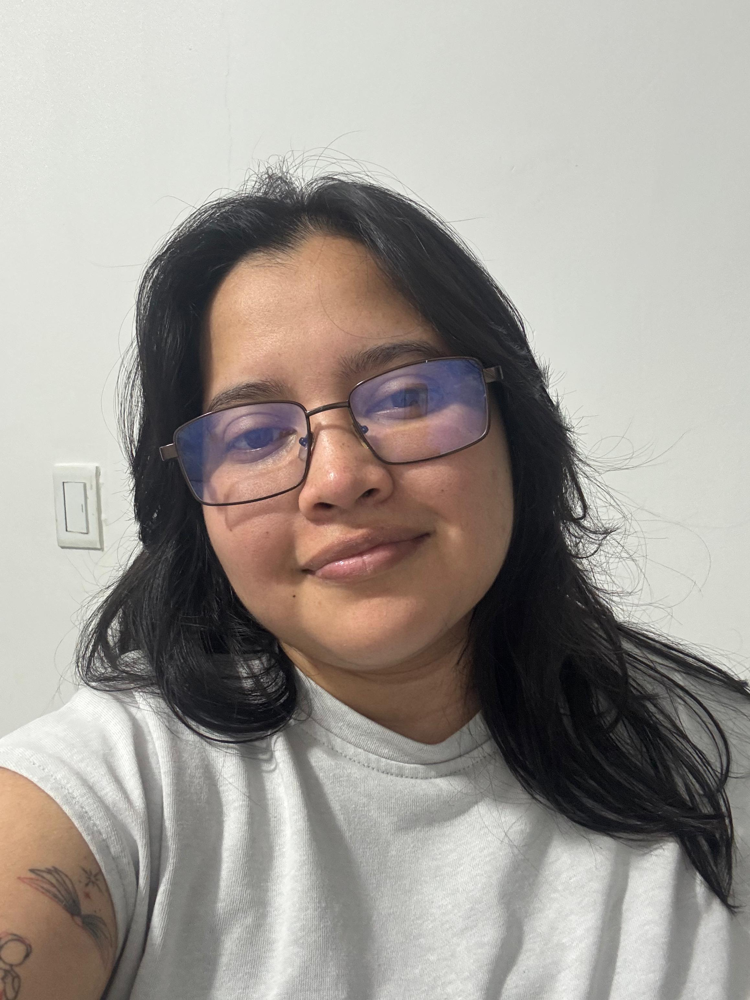
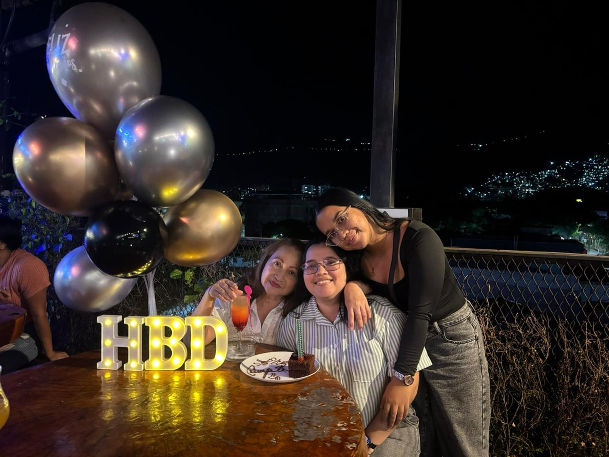
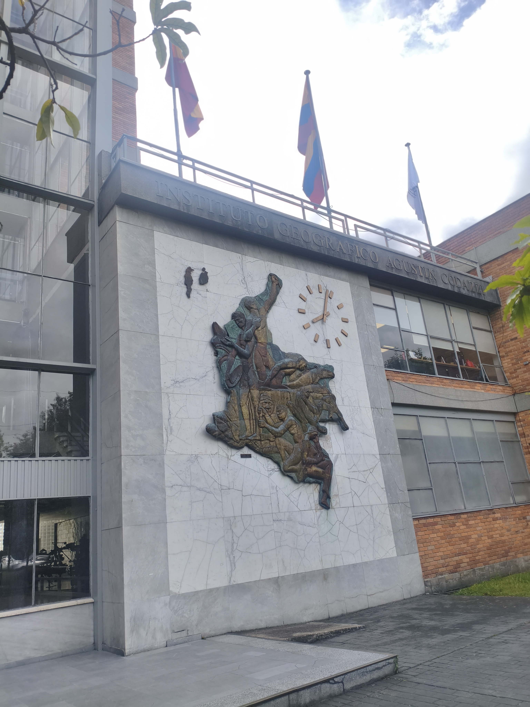
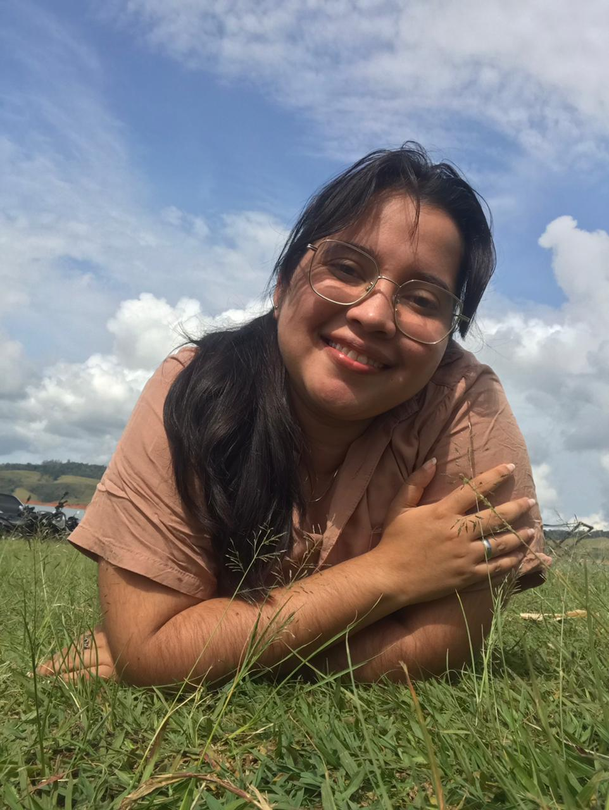

PROYECTO DE VIDA · 2026
Construir el futuro sin rendirme.
Soy María Camila Ospina Casso, tengo 26 años y estudio Ingeniería Topográfica. Este proyecto representa de dónde vengo, quién soy hoy y hacia dónde quiero dirigir mi vida.
Conocer mi historia
01 · MI HISTORIA
Las raíces de quien soy

“Crecí rodeada de mujeres fuertes.”
Nací en Florida, Valle del Cauca, y actualmente vivo en Cali. Mis padres se separaron cuando tenía aproximadamente cinco años. Desde entonces, mi mamá asumió nuestra crianza y manutención con el apoyo de mi abuela.
Durante mi preadolescencia y adolescencia tuve que volverme más independiente. Debido al trabajo de mi mamá, también asumí responsabilidades con mi hermana, acompañándola con sus tareas y deberes.
Mi mamá ha sido la persona que más ha influido en mi vida. Su historia es para mí un ejemplo de superación: quizá no tuvimos lujos, pero nunca permitió que nos faltara lo necesario.
⚽ Pasiones
Fútbol, videojuegos, viajar y los carros deportivos.
♥ Crecimiento
Las experiencias personales me enseñaron a conocerme, expresarme y cuidar mi salud emocional.
🎓 Logro
Estoy cerca de convertirme en la primera mujer ingeniera de mi familia.
02 · DIAGNÓSTICO PERSONAL
Seis dimensiones de mi presente
01 · Física
El trabajo y la universidad generan agotamiento. Quiero mejorar mi alimentación e incorporar actividad física 2 o 3 veces por semana.
02 · Cognitiva
Aprendo mejor desde la práctica. Necesito trabajar en concentración, organización y procrastinación.
03 · Social
Mantengo relaciones estables y se me facilita trabajar en equipo y participar en decisiones.
04 · Productiva
He equilibrado trabajo y universidad. Apoyo económicamente en casa y quiero fortalecer mi relación con el ahorro.
05 · Afectiva
La terapia me ayudó a expresar mejor lo que siento. Tengo una relación estable y quiero aprender a pedir ayuda con mayor facilidad.
06 · Espiritual
Creo en Dios como creador sin identificarme con las iglesias. Las personas que amo dan gran parte del sentido a mi vida.

MI CAMINO PROFESIONAL
Ingeniería Topográfica
Elegí esta profesión por pasión, porque no me veía estando todo el día en una oficina y porque me permite tener contacto con diferentes lugares, viajar y aportar a la sociedad.
03 · ANÁLISIS DOFA
Conocer mi punto de partida
F · Fortalezas
Perseverancia · Resiliencia · Independencia · Responsabilidad · Trabajo en equipo · Aprendizaje práctico
O · Oportunidades
Graduación próxima · Prácticas · Red de contactos · Modelación 3D · Drones · Posibilidad de ejercer internacionalmente
D · Debilidades
Procrastinación · Organización · Falta de motivación ocasional · Poca actividad física · Concentración · Resolver todo sola
A · Amenazas
Limitaciones económicas · Discriminación · Incertidumbre laboral · Situación del país · Costo de formación · Competencia profesional
VALORES QUE ME GUÍAN
Respeto · Lealtad · Amor · Justicia · Empatía
Hija · Hermana · Pareja · Amiga · Estudiante · Trabajadora
04 · PROPÓSITO
Lo que quiero construir
Crecer sin olvidar de dónde vengo.
Construir una vida basada en perseverancia, crecimiento profesional, amor, justicia y responsabilidad; desarrollarme como ingeniera topográfica y aportar positivamente desde mi trabajo sin olvidar a quienes han sido fundamentales en mi camino.
Una vida estable, libre y compartida.
A mis 36 años me visualizo profesionalmente realizada y económicamente estable, compartiendo un hogar con la mujer que amo, nuestro hijo y nuestras mascotas; creciendo profesionalmente, viajando y apoyando a mi mamá.
05 · META SMART
Graduarme y comenzar a ejercer
Culminar requisitos académicos
Finalizar materias, Trabajo de Grado II y requisitos de graduación.
Indicador: 100% de requisitos aprobados · 2027-IIRealizar prácticas
Buscar opciones, activar contactos, actualizar hoja de vida y adquirir experiencia.
Indicador: práctica conseguida y finalizada · 2027-IPrimer empleo profesional
Enviar hojas de vida, utilizar contactos y buscar oportunidades relacionadas con Ingeniería Topográfica.
Indicador: contrato laboral · 2027–2028Continuar mi formación
Modelación 3D, software, inglés y posteriormente formación en drones.
Indicador: cursos y certificaciones · 2028–2030Estabilidad económica
Ahorrar entre 5% y 10% cuando sea posible, apoyar a mi mamá y construir proyectos de hogar.
Indicador: ahorro mensual y avance de metasBienestar
Mejorar alimentación, descanso y actividad física progresivamente.
Indicador: actividad física 2–3 veces por semana06 · MI RUTA
Del presente al futuro
Graduación
Prácticas, materias, trabajo de grado y título profesional.
Inicio profesional
Primer empleo, experiencia laboral e inicio del ahorro.
Especialización del perfil
Modelación 3D, drones, inglés y posible aprendizaje de portugués.
Consolidación
Crecimiento profesional, estabilidad económica, vehículo y avance hacia vivienda propia.
Mi hogar y nuevos horizontes
Familia, maternidad, viajes y posibilidad de una experiencia laboral internacional.

MI VISIÓN A LOS 36
Tranquilidad también es una forma de éxito.
Me imagino despertando al lado de la mujer que amo, con nuestro hijo y nuestras mascotas. Quiero ejercer un cargo importante, tener estabilidad económica, viajar, practicar fútbol, hacer ejercicio y continuar apoyando a mi mamá.
Lisboa representa uno de los lugares donde podría imaginar una etapa de mi vida si existe una oportunidad laboral segura. Mi éxito no depende de vivir fuera de Colombia, sino de construir una vida realizada y tranquila.
07 · REFLEXIÓN FINAL
Ser la primera ingeniera de mi familia
Provengo de una familia con raíces en el campo y una historia marcada por mujeres que han salido adelante. Por eso, graduarme de una ingeniería tiene para mí un peso especial: representa el esfuerzo de mi mamá, el apoyo de mi familia y todas las decisiones que he tomado para continuar.
Mi recorrido universitario no ha sido perfecto. Me atrasé y reconozco mis dificultades con la procrastinación, la organización y la disciplina. Pero aprendí que el tiempo que tarde en alcanzar una meta no determina su importancia.
“No busco construir una vida perfecta, sino una vida en la que todo el esfuerzo tenga sentido y en la que, frente a las dificultades, continúe eligiendo no rendirme.”